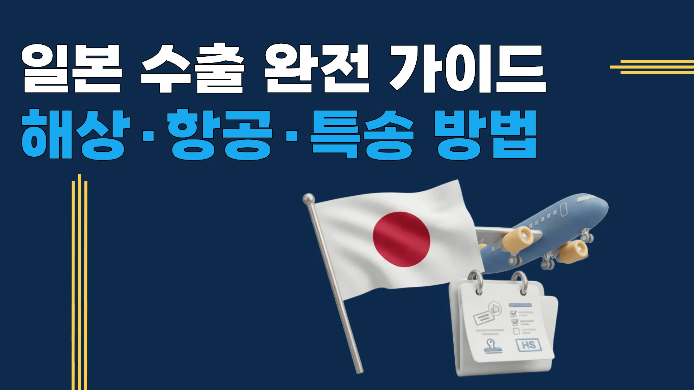

Export Forwarding2026-06-03· Tosome LogisAbout 8 min read
Shipping from Korea to Japan 2026 Sea, Air, Courier & the Customs Process
Japan is one of Korea's largest export markets. It's close, but strict customs rules and detailed labeling requirements trip up a lot of first-time exporters shipping from Korea to Japan. Here's a 2026 reference covering LCL sea freight vs. air vs. courier, lead times to major Japanese ports, the 6-step customs process, and food/cosmetics precautions.

1. Korea → Japan Shipping Methods Compared — LCL, Air, Courier
There are three main ways to ship to Japan. The best fit depends on your cargo volume, urgency, and item type.
Category
LCL Sea Freight
Air Cargo
DHL/FedEx Courier
Best volume
2+ CBM, small-to-medium weight
0.5-5 CBM, high-value/urgent
Under 30kg, small parcels
Transit time
~3-5 days, Incheon to Osaka
Same-day to next-day
1-2 business days
Cost level
Low (billed per CBM)
Medium-high (billed per kg)
Highest for small quantities
Advantages
Economical for bulk/heavy cargo
Fast delivery, suited to high-value goods
Convenient door-to-door
Watch for
Factor in CFS waiting time
Strict dangerous-goods restrictions
Limits above 30kg per parcel
Small-to-medium general cargo
LCL Sea Freight
For general cargo above 2 CBM. Incheon to Osaka in 3-5 days — the best cost efficiency.
2CBM+
Urgent / high-value cargo
Air Cargo
For urgent deadlines or high-value items. Same-day to next-day arrival, at a higher cost than sea.
Next-day
Small parcels
Courier
Small packages under 30kg. Maximum door-to-door convenience, at the highest per-unit cost.
~30kg
2. Major Japanese Ports of Entry & Lead Times (From Incheon)
The lead times below are total transit time from Incheon, including sea freight plus domestic customs clearance. CFS waiting time is separate.
Destination Port
Sea Transit
Total With CFS
Main Cargo Types
🇯🇵 Osaka
2-3 days
~3-5 days
Kansai region overall, apparel/consumer goods
🇯🇵 Tokyo/Yokohama
3-4 days
~4-6 days
Kanto region overall, electronics/parts
🇯🇵 Nagoya
3-4 days
~4-6 days
Automotive parts, manufacturing cargo
🇯🇵 Fukuoka
1-2 days
~2-4 days
Kyushu region, the fastest Korea-Japan route
🇯🇵 Kobe
2-3 days
~3-5 days
Kansai region, similar profile to Osaka
💡 Fukuoka is the closest major Japanese port to Incheon, with LCL sea freight taking just 2-4 days — the fastest route. If you're delivering to the Kyushu region, consider routing through Fukuoka first.
3. The 6-Step Korea-to-Japan Export Process
For exports to Japan, document preparation and label verification matter most. Follow these 6 steps in order.
01
Confirm item & request a forwarder quote
Confirm the HS code, whether the item can be imported into Japan, and required documents with your forwarder in advance.
Food, cosmetics, and pharmaceuticals require checking MHLW (Japan's health ministry) regulations firstConfirm whether the item is a dangerous good (batteries, chemicals, etc.) — Japan has restricted itemsGet comparative quotes for LCL, air, and courier
02
Prepare export documents
Fill out a Commercial Invoice and Packing List accurately.
Invoice unit prices/totals that don't match the actual transaction can cause problems at Japanese customsPrepare a Certificate of Origin (CO) in advance if neededFor food, a Japanese-language ingredient list and manufacturer info are recommended
03
Confirm packaging & labeling
Japan has strict labeling requirements. Confirm the required Japanese-language labeling items for your product category in advance.
Food: product name, ingredients, net weight, manufacturer, and expiration date must all be in JapaneseCosmetics: full ingredient list and manufacturer/distributor info requiredElectronics: confirm PSE mark (Japan's electrical appliance safety mark)
04
Korea export customs clearance
Your forwarder or customs broker files the export declaration. Once the Export Declaration is issued, the cargo can be loaded.
Confirm whether the item is a "strategic item" in advance (electronics, telecom equipment, etc.)For LCL, confirm the Incheon CFS cutoff time
05
Ocean transit (Incheon → Japan port)
Sea transit begins once the B/L (Bill of Lading) is issued. About 2-3 days to Osaka.
06
Japan customs clearance & local delivery
The recipient files the import declaration with Japanese customs. Under DDP terms, the forwarder handles local clearance and delivery as one package.
Japan's tariff rate ranges from duty-free up to several tens of percent, depending on HS codeFood and cosmetics may take longer due to Japanese customs inspectionDDP terms mean no clearance burden for the recipient
4. Japan Customs Specifics — Food, Cosmetics, Dangerous Goods
Japan is known for meticulous import customs regulations. The following categories require careful pre-shipment verification.
①
Food — subject to the Food Sanitation Act
Food exported to Japan requires an import notification under Japan's Food Sanitation Act. Additive standards differ from Korea's, and shipments containing non-permitted ingredients can be returned or destroyed. Alcoholic beverages require a separate license.
②
Cosmetics — subject to the Pharmaceutical and Medical Device Act
Japanese cosmetics regulations fall under the Pharmaceutical and Medical Device Act (formerly the Pharmaceutical Affairs Law). Even items classified as cosmetics must have a full ingredient list and manufacturer/distributor info in Japanese on the label. Whitening or UV-protection products classified as quasi-drugs require separate approval.
③
Dangerous goods — many air-freight restrictions
Products containing lithium batteries are subject to quantity limits under IATA regulations for air export. Sprays, lighters, and flammable liquids can't be shipped by air and must go by sea only. Always confirm dangerous-goods status with your forwarder in advance.
④
Pharmaceuticals & medical devices — prior approval required
Pharmaceuticals and medical devices cannot be imported without prior approval from Japan's MHLW. For B2C sales purposes, a separate license must be confirmed.
5. Common Problems When Exporting to Japan
These are common mistakes for first-time exporters to Japan with no prior experience. Most are preventable with pre-shipment checks.
Invoice price mismatch — Listing a unit price on the invoice that differs from the actual transaction amount can trigger delays or additional taxation during Japanese customs inspection.
Missing Japanese-language labeling — For food and cosmetics, missing Japanese labels result in a clearance hold. Labels must be affixed before shipping.
Electronics without a PSE mark — Electrical appliances sold in Japan cannot be imported at all without a PSE mark.
Incorrect HS code — Filing under the wrong HS code leads to back-duty assessment or return shipment. Use your forwarder's pre-verification service.
Missed CFS cutoff — For LCL, missing the CFS intake cutoff pushes your cargo to the next sailing schedule. Always confirm the cutoff date with your forwarder.
6. Japan LCL Shipping Cost Breakdown
These are the cost items involved in Japan LCL shipping. Confirm every line item at once with an All-in quote.
Cost Item
Description
Applies
Ocean freight
Base rate from Incheon to the Japanese destination port. Billed by CBM or weight
Required
Export CFS warehouse fee
Handling for intake and consolidation at the Incheon CFS
Required
Export customs clearance fee
Korean export declaration / customs broker fee
Required
B/L issuance fee
Bill of Lading issuance cost
Required
Japan local CFS warehouse fee
Sorting and storage at the arrival CFS in Japan
Required
Japan customs clearance fee
Paid by the forwarder under DDP terms, otherwise by the recipient
Depends on terms
Japan inland transportation
Delivery from the arrival port to the final destination
Included under DDP
Certificate of Origin fee
CO issuance cost if using the Korea-Japan FTA
If claiming FTA
7. Tosome Logis Japan Export Service
Just tell us your origin point and item — we'll handle everything needed to ship to Japan.
📋Invoice & packing list preparation — no paperwork burden for you
🚢Side-by-side LCL, air, and courier comparison — recommended by total cost
📦All-in quote — freight, CFS fees, clearance, and B/L issuance all included. Zero cost variance
🌐DDP handling available — local Japan customs clearance through last-mile delivery, all in one
📘FTA certificate of origin (CO) support — helping you access Japan tariff benefits
✅Guidance on EXW/FCA/CIF/DDP incoterm cost differences — beginner-exporter friendly
8. Frequently Asked Questions — Shipping to Japan
If your cargo volume is around 2 CBM or less and speed matters, air freight is the better choice. For general cargo above 2 CBM, LCL sea freight is more cost-effective, taking roughly 3-5 days from Incheon to Osaka. It's most accurate to get quotes for both methods from your forwarder and compare total cost.
By LCL sea freight: about 3-5 days from Incheon to Osaka, 4-6 days to Tokyo (Yokohama), and 2-4 days to Fukuoka. Air freight typically arrives same-day to next-day, and courier (DHL/FedEx) typically arrives within 1-2 business days.
The basic documents are a Commercial Invoice, Packing List, and B/L or AWB. Depending on the item, you may also need a Certificate of Origin (CO), a quarantine certificate, an MHLW filing for food/cosmetics, or documents related to Japan's Pharmaceutical Affairs Law. Always confirm with your forwarder before shipping.
Food exports to Japan require an import notification under the Food Sanitation Act. Additive standards can differ from Korea's, so pre-verification is essential. Japanese-language labeling — product name, ingredients, net weight, and manufacturer info — is also mandatory.
Costs include ocean freight (CBM basis), export CFS warehouse fees, export clearance fees, B/L issuance fees, Japan local CFS warehouse fees, Japan customs clearance fees (under DDP terms), and inland transportation. An All-in quote lets you confirm every line item at once.
1. Personal Information Collected and Collection Method
Tosome Logis (the "Company") collects the following personal information to provide services such as customer inquiries, quote requests, and shipping consultations.
Items collected: name, email, phone number, address, cargo information, and any other information provided by the customer
Collection method: direct input via the website inquiry form, email inquiries, phone consultations, etc.
2. Purpose of Collection and Use
Responding to inquiries and quote requests
Confirming cargo information and contacting customers to provide shipping services
Service-related notices and customer support
Improving logistics service quality and providing tailored guidance
3. Provision and Sharing of Personal Information
The Company does not disclose personal information to third parties without customer consent, except in the following cases.
When the customer has given prior consent
When required by law or requested by a government authority
When minimal information must be shared with partner carriers (FedEx, DHL, UPS, etc.) necessary to complete shipment
4. Retention and Use Period of Personal Information
Item
Reason for Retention
Retention Period
Inquiry and consultation history
Preventing service confusion, dispute resolution
3 months
Contract and payment information
Act on Consumer Protection in Electronic Commerce
5 years
Log records
Protection of Communications Secrets Act
3 months
5. Procedure and Method of Destroying Personal Information
Paper documents: shredded or incinerated
Electronic files: deleted using methods that prevent recovery
Customers may request to view, correct, or delete their personal information at any time. Requests are processed without delay after identity verification.
9. Security Precautions
Use a combination of letters and numbers in your password, and change it periodically.
Log out and close your browser after using shared or public devices.
Do not leave personal information on message boards, chat windows, etc.
 KakaoTalk
KakaoTalk
 Naver Blog
Naver Blog